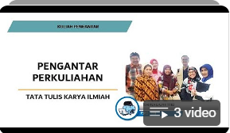
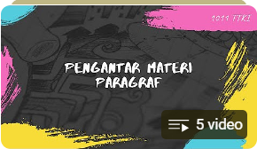

Daftar Video Pembelajaran
Berikut adalah beberapa video yang dapat membantu Anda mempelajari lebih lanjut tentang Bahasa Indonesia:
Bab 1: Pengantar TTKi

Bab 2: Pengenalan Tata Tulis Karya Ilmiah
Bab 3: Tata Kata

Bab 4: Tata Kalimat
Bab 5: Paragraf

Bab 6: Karya Tulis Ilmiah I
Bab 7: Karya Tulis Ilmiah II
Coba Latihan